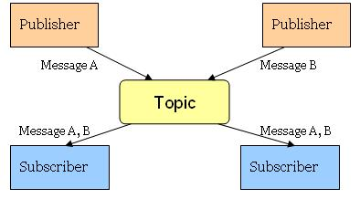

Message Driven bean features, can be used to implement a mecanism for push message from server to a client.
For exemple a chat or notify something to the client.
Publish and Subscribe-Messages are broadcast to all registered listeners through Topics.
In javascript, create Subscriber
var sub = new Subscriber("mytopic").then(function() {
// confirm subscrition
}).catch(function(fault) {
// subscrition fail
}).message(function(payload) {
doSomethingWithMsg(payload); // payload in json : object format
});In javascript, get Subscriber and call unsubscribe
sub.unsubscribe().then(function() {
// confirm unsubscrition
}).catch(function(fault) {
// unsubscrition fail
});Just annotate java class method with @JsTopic
@DataService(resolver = Constants.Resolver.CDI)
public class MessageServices {
@JsTopic("TopicName")
public String publish(String message) {
return message;
}
...Call method from javascript
new MessageServices().publish(message).then(function() {
// confirm send
}).catch(function(fault) {
// send fail
});You can use dynamic topicname with @JsTopicName
@JsTopic
public String publishToTopic(String message, @JsTopicName topic) {
return message;
}Call method from javascript
new MessageServices().publish(message, topic).then(function() {
// confirm send
}).catch(function(fault) {
// send fail
});When you use previous features, you can listen a special topic for know how many subscribers are connected
Simply subscribe to topic name preceded by subscribers:
var sub = new Subscriber("subscribers:mytopic").then(function() {
// confirm subscrition
}).catch(function(fault) {
// subscrition fail
}).message(function(payload) {
doSomethingWithMsg(payload); // payload in json : object format
});In java, publish message to all subcriber clients
@Inject
@MessageEvent
Event<MessageToClient> wsEvent;
public void publish() {
MessageToClient messageToClient = new MessageToClient("mytopic");
messageToClient.setResult("Message From server"); // You can send all serializable objects
wsEvent.fire(messageToClient);
}